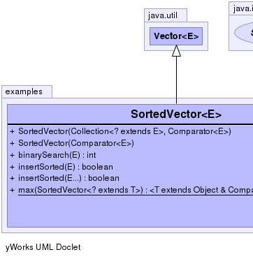
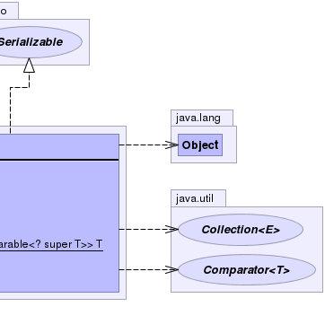

public class SortedVector<E>
extends java.util.Vector<E>
implements java.io.Serializable
Vector as a base class.|  |  |
| Constructor and Description |
|---|
SortedVector(java.util.Collection<? extends E> collection,
java.util.Comparator<E> comparator)
Constructor
Constructs a vector containing the elements of the specified collection. |
SortedVector(java.util.Comparator<E> comparator)
Constructor
|
| Modifier and Type | Method and Description |
|---|---|
int |
binarySearch(E element)
Standard implementation of binary search algorithm.
|
boolean |
insertSorted(E... elements)
Insert elements into the vector, sorted in ascending
order according to the Comparator.
|
boolean |
insertSorted(E element)
Insert an element into the vector, sorted in ascending
order according to the Comparator.
|
static <T extends java.lang.Object & java.lang.Comparable<? super T>> |
max(SortedVector<? extends T> data)
Returns the maximum element of the given sorted vector, according to the
natural ordering of its elements.
|
add, add, addAll, addAll, addElement, capacity, clear, clone, contains, containsAll, copyInto, elementAt, elements, ensureCapacity, equals, firstElement, get, hashCode, indexOf, indexOf, insertElementAt, isEmpty, iterator, lastElement, lastIndexOf, lastIndexOf, listIterator, listIterator, remove, remove, removeAll, removeAllElements, removeElement, removeElementAt, removeRange, retainAll, set, setElementAt, setSize, size, subList, toArray, toArray, toString, trimToSizepublic SortedVector(java.util.Comparator<E> comparator)
comparator - the Comparator to use with binary
search algorithmpublic SortedVector(java.util.Collection<? extends E> collection, java.util.Comparator<E> comparator)
collection - the Collection whose elements are to be
placed into this SortedVectorcomparator - the Comparator to use with binary
search algorithmO(n log n), where n
is this container's size (QuickSort complexity)public boolean insertSorted(E element)
element - the element to insertO(log n), where n
is this container's size (BinarySearch complexity)public boolean insertSorted(E... elements)
elements - the elements to insertO(log n), where n
is this container's size (BinarySearch complexity)public int binarySearch(E element)
element - the Object to look forO(log n), where n
is this container's sizepublic static <T extends java.lang.Object & java.lang.Comparable<? super T>> T max(SortedVector<? extends T> data)
Comparable interface. Furthermore, all elements
in the sorted vector must be mutually comparable (that is, e1.compareTo(e2)
must not throw a ClassCastException for any elements e1 and
e2 in the sorted vector).data - the SortedVector whose maximum element is to be
determined